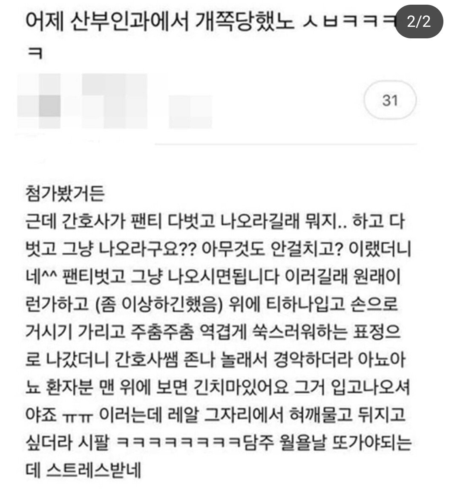

병원은 언제가도 쫄리고 긴장되지

병원은 언제가도 쫄리고 긴장되지
저건 간호사가 설명을 똑바로 안한거지
설명을 좆같이했네 봊같이한건가
저건 간호사 잘못이지
ㅋㅋㅋㅋㅋ아 ㅈㄴ웃긴데
간호사가 긴치마 얘길 안해준거
저건 간호사 잘못맞음
지어낸게 간호사는 한두번이 아니라서 존나 사무적으로 저거 입고 나오세요 함
글고 환복할거 잇으면 아에 갖다주던가 확실한 위치에잇다… 개주작소설
산부인과는 탈의 위치에 입고 나올 치마 대놓고 비치해둠
간호사가 명령을 빨개벗고 나오게 했네
태움없는곳인가봐
졸라 대충 설명해주긴했네